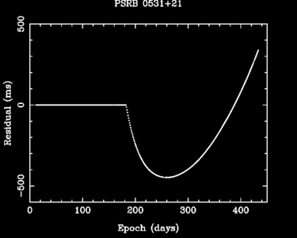

In pulsar astronomy, a glitch is a sudden discontinuity in the rotation period of a pulsar.

|
There are two physical mechanisms thought to be responsible for the glitch of a pulsar – either they are caused by starquakes, in which case the neutron star’s crust cracks, and there is a fundamental reorganisation of the matter within the star, or they are due to a catastrophic unpinning of vortices in the neutron star superfluid. |
| Young, energetic pulsars like the Crab are thought to undergo starquakes whereas those of more intermediate age (~104-5 yr) are thought to glitch because of an unpinning of the vortices in the neutron star superfluid. Both the Crab and Vela pulsars glitch regularly. Millisecond pulsars and those with large characteristic ages rarely if ever glitch. |

The largest glitch ever observed in the Crab Pulsar. This plot shows the timing residuals after fitting a simple slow-down model to the Crab pulsar’s rotation before the glitch. After the glitch the pulsar speeds up as the moment of inertia has been reduced. However, post-glitch the period derivative of the pulsar increases, and eventually the pulsar spins more slowly than it would have if the glitch had not occurred, which in the above case occurs ~70 days after the glitch.
Credit: Used with permission from Professor Andrew Lyne.
Credit: Used with permission from Professor Andrew Lyne.